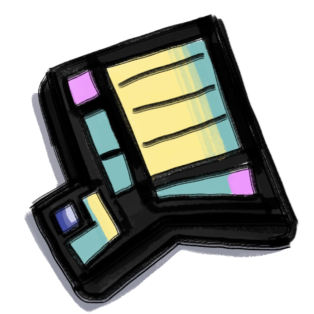
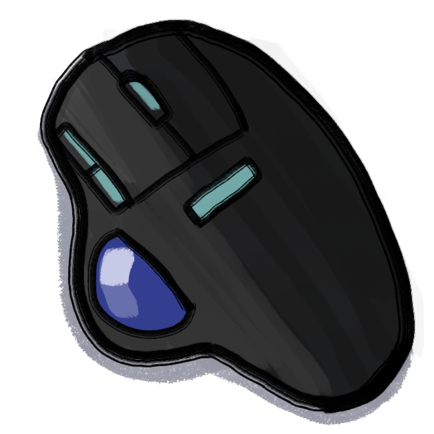
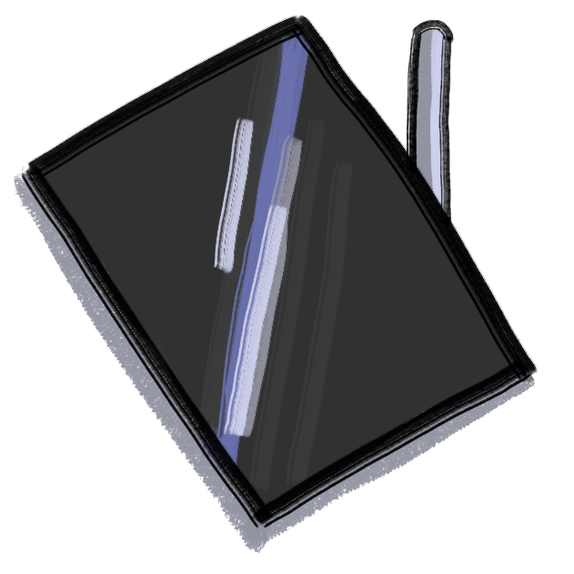

callmekt
HomeHardware
The computer tools I use are the objects I touch the most in my daily life, so I put a lot of thought and experimentation into each item.
-

ErgoDox EZ
My only truly indespensible companion.
Around 2018 I started to develop severe wrist pain, which caused me to wear a wrist brace on both arms every night. Almost nothing seemed to work to keep the pain away for long.
I had always wanted to try a split keyboard because I wanted that hacker aesthetic, so this was enough motivation for me to try a more radical keyboard like the ErgoDox EZ.
Specs:
- Switches: Akko V3 Lavender Purple Pros
- Caps: MT3 Godspeed
Was it hard to learn to use?
Yeah. A little.
I took a holiday weekend to force myself to learn how to type again. I never learned to type "correctly" in the first place so I had some habits that I had to break. I struggled to re-train right hand to press the Y key.
But now, not only is my pain gone, but I also have a lot of useful shortcuts that I can't live without.
Layout Info:
- Space Cadet Shift
- ESDF for text cursor movement
- Link to layout
-

Ergo M575
A trackball mouse is also key for reducing wrist strain/pain.
While Logitech makes more expensive/fancy trackball mice, I actually find this model to be the best one for daily use.
This should go without saying but...
Please don't use a trackball mouse to play League of Legends.
-

iPad Air
I never thought I'd own an Apple product, but the move to USB-C (thanks to some tactical EU legislation) was enough for me to give it a try.
The combo of the iPad and its matching Magic Keyboard lead to me writing more than I ever would have imagined. Its formfactor is just the right size for me to type away on the couch, in bed, or on the go.
(Though... due to the wrist issues mentioned above, I need to be careful how often and in what position I type for a long period of time on this little guy. Moderation seems to be okay.)